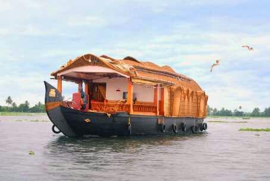
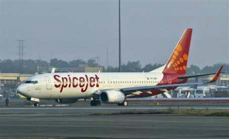
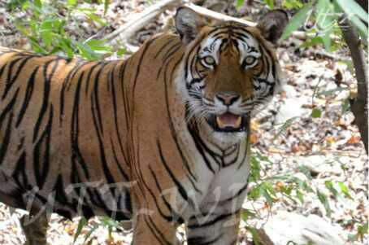
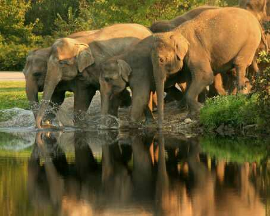

HAPPY JOURNEY .COM |
creating happy travellers
HAPPY JOURNEY .COM |
creating happy travellers
Jammu & Kashmir
| Introduction | |
| Jammu & Kashmir The lure of lush landscapes, the exhilaration of having seen Leh – the high-altitude desert, and the holy darshans ofVaishno Devi – if there is a heaven on earth, it is here, in Jammu& Kashmir.Aparadise trying to regain its rightful place on the tourism map after the clouds of militancy slowly disperse. Jammu, Kashmir and Ladakh are the three parts that together form the state, each so distinct from the other. Let us begin with the capital city of Srinagar… |
The water of the is amazingly clear, with innumerable darshans Dal Lake,house boats moored along the banks. The Jami Masjid is notable for the 300-plus pillars supporting the roof,each made of a single deodar tree trunk. The beside the Dal Lake, has a temple on top, built by Emperor Ashoka's son around 200 BC. The in Lal Mandi, has exhibits including illustrated tiles from Harwan. Open from 10:30am to 4:30pm. Closed on Mondays, and during Friday Admission free. Shankaracharya Hill Shri Pratap Singh Museum, namaz |
The all-wooden is shaped like a cube with a pyramidal roof rising to a spire. Non-Muslims are not allowed inside. Hamdan Mosque Pather Masjidwas built by Empress Noorjahan in 1623 while the is on the east bank, between the Zaina Kadal andAli Kadal bridges.
|  |  | |
Hill-Sight |
Houseboat |
Srinagar airoort |
 |
 |  |
 |
|
Jammu & Kashmir package 6days & 7night|Jammu & Kashmir package starting just @1,98,000/- |
Designed by Subhadip Dutta.....